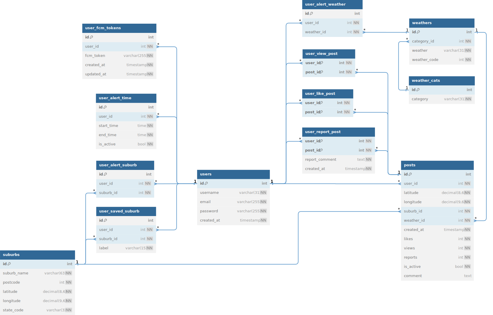

0. Database Structure
- 0.1 ER Diagram
0. Database Structure
0.1 Entity Relationship Diagram
0.2 Notable Unique Key
- users: email
- suburbs: (suburb_name, postcode)
- user_alert_time:(user_id, start_time, end_time)
- weathers: (weather, weather_code)
- user_alert_weather: (user_id, weather_id)
- user_alert_suburb: (user_id, suburb_id)
- user_saved_suburb: (user_id, label)